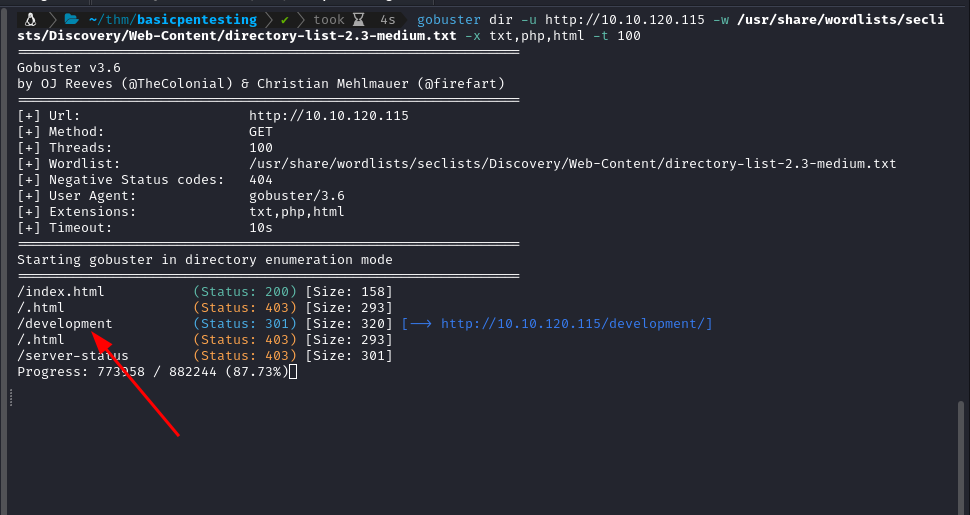
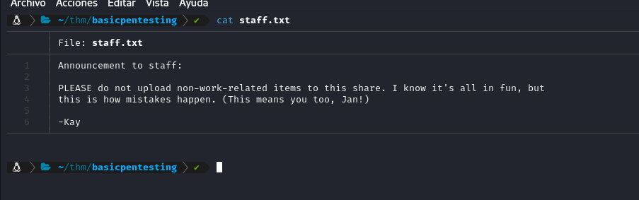

📡 Basic Pentesting - WriteUp
// Escaneo de puertos abiertos

// Escaneo de servicios
Escaneo de servicios a los puertos abiertos:

// Revisamos la página Web
Nos encontramos que está bajo mantenimiento:

// Puerto 8080
El servicio http por el puerto 8080 solo nos arroja a un Rabbit Hole:


Estas credenciales no funcionan.
// Gobuster
Usamos Gobuster para ver los subdirectorios del puerto 80:

// Directorio oculto
Encontramos este directorio oculto con el siguiente contenido:

// Información sensible
Chequeamos la información sensible que puedan tener los archivos de texto:


Extraemos la versión de SMB y que el usuario K le dice a J que su contraseña es fácil de crackear.
// SMB Share
Nos logeamos en smb como usuario anónimo y obtenemos este archivo:

Extraemos información de los nombres de usuarios. Deducimos que Jan tiene una contraseña débil fácil de crackear.

// Fuerza bruta con Hydra
hacemos fuerza bruta con Hydra al servicio SSH y tenemos respuesta positiva:

Con esta contraseña ya podemos loguearnos al servicio SSH como Jan.
// SSH Login
Nos logueamos a SSH con la contraseña conseguida:

// Descargando id_rsa
Encontramos en el home/kay/.ssh una id_rsa que nos permitiría conectarnos al ssh como Kay. Nos disposamos a bajarla utilizando un servidor python:


Está protegida con una passfrase y debemos crakearla con John the Ripper:

// Consiguiendo passphrase
Conseguimos la passfrase para poder lograr una conexión:

// Login como Kay
Cambiamos los permisos del archivo y nos disposamos a entrar con la passphrase:

// Objetivo logrado
Dentro del directorio personal de Kay conseguimos nuestro objetivo: